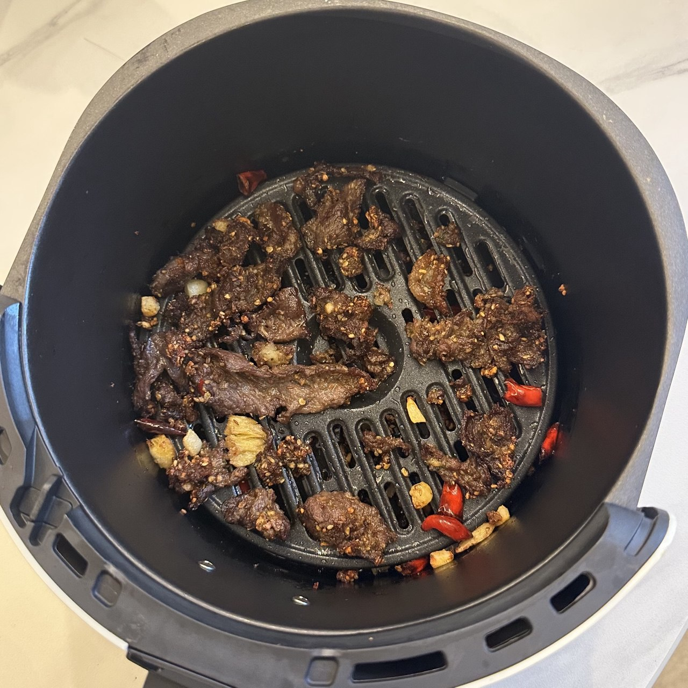

Cuisiner avec une Friteuse à Air | Original, traduit par l'IA
L’appareil à air fryer est devenu mon outil de cuisine préféré récemment. J’ai acheté le Midea Air Fryer KZE5004 pour environ 126 CNY.
J’ai préparé les plats ci-dessous, et l’expérience a été vraiment agréable.
Le dernier plat montré ici n’a pas été cuit dans l’air fryer—c’était simplement des nouilles faites dans une casserole. Comme c’est l’une de mes récentes tentatives culinaires, je l’ai inclus ici aussi.
Si vous utilisez souvent un outil de cuisine après l’avoir acheté, vous pouvez dire que vous l’aimez vraiment.
L’air fryer a remplacé mon four électrique. J’aimerais en fait utiliser les deux, mais ma femme ne me le permet pas—elle se plaint que ça prend trop de place et encombre notre salle à manger et notre cuisine, qui sont déjà remplis de nombreux outils et vaisselles.
C’est raisonnable puisque ma femme me rend visite le week-end, et je ne veux pas que l’endroit soit trop encombré. Si je vivais seul en permanence, je remettrais le four électrique dans la salle à manger.
Il y a certains avantages à garder les deux appareils. Premièrement, vous pouvez utiliser le four électrique et l’air fryer simultanément, surtout quand vous cuisinez plusieurs plats. Deuxièmement, vous pouvez comparer les différences subtiles de goût en préparant les mêmes ingrédients dans les deux. Troisièmement, c’est un gâchis de laisser un bon produit inutilisé.
Utiliser toujours le même outil peut devenir ennuyeux, alors j’ai essayé la cuisson traditionnelle sur feu et j’ai fait des nouilles dans une casserole. Je me souviens qu’en 2020 et 2021, je cuisinais des plats similaires chez mes parents et je faisais parfois de petites vidéos à ce sujet.
À l’époque, cuisiner semblait facile. Mais maintenant, comme je ne cuisine pas aussi souvent, même utiliser l’air fryer me semble parfois fastidieux, et je suis tenté de commander des plats à livrer quand je suis occupé. En conséquence, je n’ai pas beaucoup utilisé de poêle ou de casserole récemment—alors je suis content de l’avoir fait aujourd’hui.
J’avais acheté des paquets de boulettes de bœuf pour les cuire dans l’air fryer, mais maintenant je veux aussi les essayer dans une casserole.
Les nouilles étaient délicieuses. J’ai utilisé beaucoup d’eau pour faire bouillir les ingrédients, puis j’ai retiré l’excès d’eau avant d’ajouter le sachet d’assaisonnement dans la casserole. Le plat final était excellent !

Source : Capturé par moi-même

Source : Capturé par moi-même

Source : Capturé par moi-même

Source : Capturé par moi-même

Source : Capturé par moi-même

Source : Capturé par moi-même

Source : Capturé par moi-même
Cuisine
2024.12.29
-
Cuisiner pour soi est simple. Utilisez de l’huile pour faire sauter car son point d’ébullition est plus élevé que celui de l’eau, ce qui aide à chauffer les aliments plus efficacement.
-
Il est facile de préparer un plat avec de la viande, des légumes, du piment, de l’ail et du gingembre.
-
Un coupe-légumes est un outil très pratique. Il peut couper les légumes en dés, en tranches ou en lamelles, et peut être utilisé pour des tâches comme émincer des pommes de terre ou créer de petits granules à partir de poivrons.
-
Faire de la soupe est facile avec une cuisinière électrique. Ajoutez les ingrédients, assaisonnez avec du sel, réglez la minuterie et laissez cuire.
-
La soupe à l’igname chinoise est excellente car elle cuit facilement dans la soupe et épaissit le bouillon. Les carottes, le daikon et les tomates sont également de bons ingrédients pour cette soupe.
-
Un four à gril peut être utilisé pour faire des tartes aux œufs, de l’agneau, du bœuf, du porc, des hot dogs, des champignons, et plus encore. Pour la viande, réglez la température à 200°C et laissez cuire environ 20 minutes.
-
Pour la cuisine en extérieur, vous aurez besoin d’un feu. Des feuilles sèches peuvent être utilisées pour démarrer le feu. Trouvez un récipient pour cuire les aliments, ou même utilisez une tuile comme casserole improvisée.
-
Un cuiseur à riz peut aussi être utilisé pour réchauffer des aliments, pas seulement du riz. Cependant, gardez à l’esprit que les légumes ont tendance à libérer de l’eau, ce qui peut rendre le riz trop mouillé. Ajoutez seulement un peu d’eau si vous cuisinez des légumes dans le cuiseur à riz.
-
Un robot de cuisine est un outil pratique pour préparer des plats. Ajoutez simplement les ingrédients et laissez le robot s’occuper de mélanger.
-
Nous devons comprendre la durée nécessaire pour faire sauter chaque ingrédient. Le brocoli prend plus de temps, tandis que les champignons et la viande prennent moins de temps.
-
Si nous les cuisons ensemble, les temps de cuisson différents feront que certains ingrédients seront trop cuits et d’autres pas assez. L’ordre dans lequel nous ajoutons les ingrédients à la poêle compte.
-
Nous devons minimiser le lavage de la casserole entre les plats et pouvons faire sauter certains aliments ensemble.
-
Nous pouvons appliquer le même processus ou fonction à des objets similaires ou ayant les mêmes caractéristiques. Cela s’applique autant à la cuisine qu’à la programmation.
-
Les ingrédients chauffés dans un four à gril peuvent être enrobés de fécule de maïs et de sauce soja légère. Utiliser du jus de fruit pour mariner est aussi acceptable, comme du jus de citron, d’orange ou de pomme.
-
Nous coupons la viande ou d’autres ingrédients en petits morceaux pour qu’ils soient chauffés plus efficacement dans la casserole. Ainsi, la préparation est différente pour faire une soupe, qui peut accepter des morceaux plus gros.
-
Le plus important en cuisine est de bien cuire les aliments pour qu’ils soient sûrs à consommer.
-
Utiliser un four à gril au lieu d’un cuiseur vapeur électrique signifie qu’il n’implique pas d’eau pour chauffer les aliments, ce qui les rend secs.
-
Un mortier et un pilon sont un excellent outil pour écraser de l’ail.
-
N’utilisez pas trop de sel, surtout si les ingrédients sont déjà enrobés de sauce soja.
-
La viande n’a généralement pas besoin d’être lavée à nouveau. Les gens ont tendance à trop laver les ingrédients ; il n’est pas nécessaire de les nettoyer complètement à l’eau. Nous devons juste nous assurer que les ingrédients sont frais.
-
Le papier sulfurisé est meilleur que le papier aluminium car il ne colle pas à la surface de cuisson.
-
Faites attention aux ingrédients qui contiennent beaucoup d’eau, comme les poivrons. Les mélanger avec de la viande peut libérer de l’eau, abaissant la température de cuisson et ralentissant le processus.
 Source : Capturé par moi-même
Source : Capturé par moi-même
 Source : Capturé par moi-même
Source : Capturé par moi-même